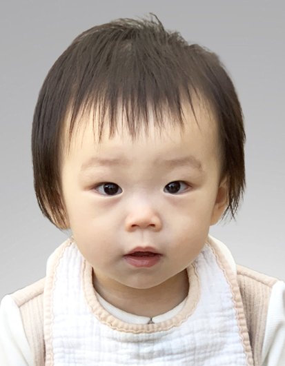

과거를 기억하고, 오늘을 만들어가는 방법
Remember the Past, and Make the Present

예술로 만드는 자서전 프로젝트
1) 이전 세대를 위한 예술의 가능성을 열다
오늘날 예술 지원과 주제는 주로 젊은 창작자들과 트렌드에 초점이 맞추어져 있다. 이는 혁신과 참신한 시도를 장려하기 위한 긍정적인 면이 있으나, 한국과 용인시의 빠른 고령화 추세를 고려할 때 세대만을 주목하는 것은 불균형적 시각을 반영한다.
본 기획은 이전 세대, 특히 중장년층을 위한 예술 경험을 조명하고자 한다. 단순히 과거를 회상하는 데 그치지 않고, 스스로의 삶 속에서 발견되어야 할 가치와 의미를 큐레이션의 과정으로 되짚어보며 재해석하는 장을 만든다. 이를 통해 참여자들은 자신의 삶에 내재된 가치를 발견하고, 이를 예술적으로 표현하는 경험을 얻게 될 것이다.
2) 스스로를 잃은 세대를 위한 일상의 큐레이션
MZ세대는 ‘나’ 중심의 사유와 개인의 독립을 존중하는 환경에 익숙하다. 반면 부모 세대는 희생과 헌신을 삶의 키워드로 살아왔다. 많은 이들이 자신을 돌아보고 정체성의 조각들을 다시 배열할 기회를 갖지 못했다.
큐레이션으로서의 예술은 “무엇이 중요한가, 그것이 왜 중요한가”를 확인하고 정리하는 과정이다. 일상의 장면에서도 충분히 가능하며, 작업의 과정 속에서 발견되는 가치들을 언어와 이미지로 풀어내어 독립된 서사로 묶어낸다.
3) 세대 간 대화와 상호 성장을 위한 기회
젊은 예술가와 중장년층의 베어링 간극을 줄이고, 상호 성장과 사회적 공감을 도모한다. 단순한 전시를 넘어 경험과 기록을 축적하는 아카이브를 통해 다음 협업으로 이어지는 기반을 만든다.
1) Opening Artistic Possibilities for Older Generations
Today’s art support and themes are primarily focused on young creators and emerging trends. While this encourages originality, it also reflects an imbalanced perspective—especially considering the rapid aging of Korean society and cities like Yongin.
This initiative aims to shed light on artistic experiences for older generations, particularly the middle-aged. Rather than simply reminiscing about the past, the goal is to create a space where individuals can reflect on their own lives and reinterpret them through a curatorial process.
2) Everyday Curation for a Generation That Lost Itself
Many parents and older generations have lived lives defined by sacrifice and dedication, often without the chance to reflect on their own identity. Through the concept of “everyday curation,” participants can revisit moments of their lives, uncover hidden value, and re-compose them into an artistic narrative.
3) Opportunities for Intergenerational Dialogue
By bridging the gap between young artists and mid-to-older generations, this project fosters mutual growth and social empathy, creating an archive that fuels future collaborations beyond a single exhibition.